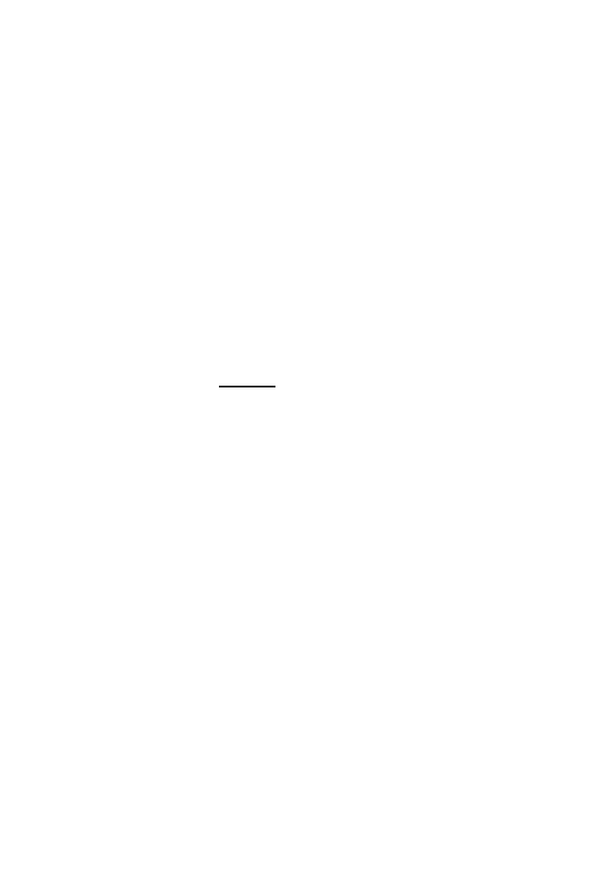

354
12 Inferring the Past: Phylogenetic Trees
We treat the substitution process as a stochastic process and define the
distance between the two sequences, measured on the path in a tree separat-
ing them, as the expected number of substitutions that change the base at
that site. Note that the Hamming distance counts a difference between two
sequences at a position as one change. The new definition of distance recog-
nizes that a sequence difference at a position may be the result of more than
one change.
12.4.1 A Stochastic Model for Base Substitutions
We consider first a single homologous site in our two sequences and assume
the two sites have diverged for time length
t
. Since the evolutionary clock is
running on both paths from the two sequences back to their common ancestor,
they are separated by time 2
t
. Suppose that the number of substitutions that
arise in any branch of length
t
has a Poisson distribution with mean
λt
; the
probability that
k
substitutions arise is given by the Poisson probability
e
−
λt
(
λt
)
k
k
!
, k
= 0
,
1
,
2
, . . . .
(12.2)
We then have to decide what happens at each site where a potential substi-
tution can occur. A general model specifies
P
(substitution results in base
j
|
site was base
i
) =
m
ij
.
A simple example of this mechanism, Felsenstein’s (1981) model, specifies
m
ij
=
π
j
,
(12.3)
with
π
i
≥
0 and
π
1
+
π
2
+
π
3
+
π
4
= 1. From here on we employ the numeric
notation introduced previously: 1, 2, 3, and 4 correspond to bases
A
,
G
,
C
, and
T
, respectively. This implies that the substitution that appears at a position
in the sequence does not depend on the type of the base at that position when
the substitution occurred. We also assume that the set of probabilities
π
j
is
the same at every position in the sequence.
Next we calculate the probability
q
ij
(
t
) that a base that was
i
at time 0
has mutated to base
j
a time
t
later. For the model in (12.3), this is easy to do.
We calculate the probability by conditioning on whether or not any mutations
occurred in time
t
. Suppose first that
i
=
j
. If there were no mutations on
that branch (probability e
−
λt
), then the base time
t
later must still be
j
. On
the other hand, if there is at least one mutation, then the chance that the
resulting base is
j
is just
π
j
; this follows because the mutation mechanism
does not care about the type at a site when a mutation occurs. Summing over
the two possibilities gives
q
jj
(
t
) = e
−
λt
+ (1
−
e
−
λt
)
π
j
.
(12.4)
When
i
=
j
, the same argument shows that